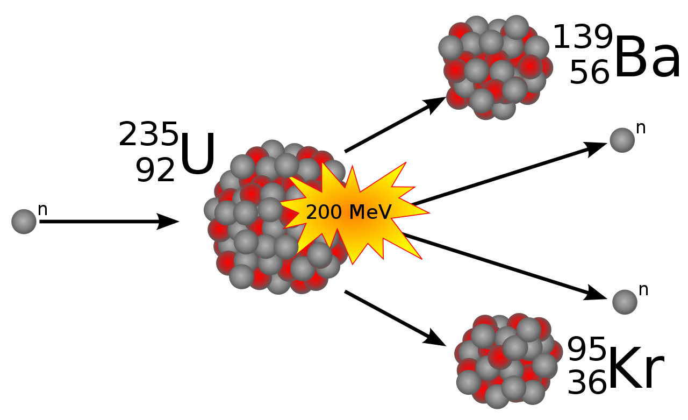
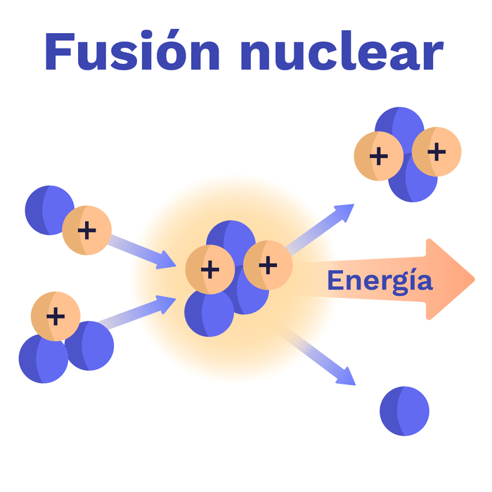

¿Cual es la diferencia entre fisión y fusión nuclear?
Tanto la fisión como la fusión nuclear son reacciones nucleares que liberan la energía almacenada en el núcleo de un átomo. Pero hay importantes diferencias entre ambas. La fisión nuclear es la separación de un núcleo pesado en núcleos más pequeños, mientras que la fusión nuclear es la combinación de núcleos ligeros para crear uno más grande y pesado.

Diferencias clave entre la fisión nuclear y la fusión nuclear
¿Qué es la Fisión Nuclear?
La fisión nuclear es la reacción en la que el núcleo de un átomo pesado, al capturar un neutrón incidente, se divide en dos o más núcleos de átomos más ligeros, llamados productos de fisión, emitiendo en el proceso neutrones, rayos gamma y grandes cantidades de energía. El núcleo que captura el neutrón incidente se vuelve inestable y, como consecuencia, se produce su escisión en fragmentos más ligeros dando lugar a una situación de mayor estabilidad. Además de estos productos, en la reacción de fisión se producen varios neutrones que al incidir sobre otros núcleos fisionables desencadenan más reacciones de fisión que a su vez generan más neutrones. Este efecto multiplicador se conoce como reacción en cadena. Para que se produzca una reacción de fisión en cadena es necesario que se cumplan ciertas condiciones de geometría del material fisionable y se supere un umbral determinado de cantidad del mismo, conocido como masa crítica. La fisión puede llegar a producirse de forma espontánea, pero es necesaria la existencia de un neutrón que incida con la energía adecuada.

¿Qué es la Fusión Nuclear?
La fusión nuclear es una reacción nuclear en la que dos núcleos de átomos ligeros, en general el hidrógeno y sus isótopos (deuterio y tritio), se unen para formar otro núcleo más pesado, generalmente liberando partículas en el proceso. Estas reacciones pueden absorber o liberar energía, según si la masa de los núcleos es mayor o menor que la del hierro, respectivamente. Un ejemplo de reacciones de fusión son las que tienen lugar en el sol, en las que se produce la fusión de núcleos de hidrógeno para formar helio, liberando en el proceso una gran cantidad de energía en forma de radiación electromagnética, que alcanza la superficie terrestre y que percibimos como luz y calor.
Para que tenga lugar una reacción de fusión, es necesario alcanzar altas cotas de energía que permitan que los núcleos se aproximen a distancias muy cortas en las que la fuerza de atracción nuclear supere las fuerzas de repulsión electrostática. Para ello, se deben cumplir los siguientes requisitos:
Sin embargo, los confinamientos convencionales, como las paredes de una vasija, no son factibles debido a las altas temperaturas. Por este motivo, se encuentran en desarrollo dos métodos de confinamiento:
